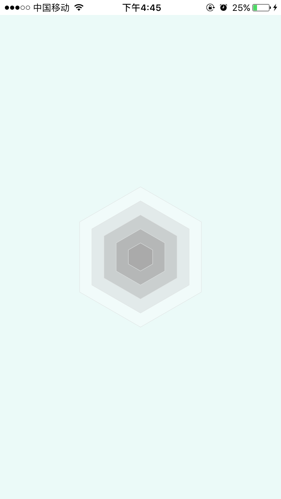

引言
上一篇介绍了在Android中用canvas绘制雷达图，涉及到path的使用，本篇文章介绍一下在iOS中怎样绘制雷达图。先看效果图

使用方法
自定义控件RadarView，继承自UIView，然后给这个自定义控件实例radarView设置数据，再调用[radarView setNeedsDisplay]来刷新。
数据实体类Data.h
1
2
3
4
5
6
7
8
| #import <Foundation/Foundation.h>
@interface Data : NSObject
@property (strong, nonatomic) NSString *name;
@property (assign, nonatomic) double value;
@end
|
开始实现
常量类
Consts.h
1
2
3
4
5
6
7
8
9
10
| // 字和小圆环的颜色
#define RADAR_RING_COLOR_ARRAYS @[ [UIColor colorWithHex:@"#00A0EA" alpha:1.f], [UIColor colorWithHex:@"#F9B526" alpha:1.f], [UIColor colorWithHex:@"#920683" alpha:1.f], [UIColor colorWithHex:@"#E2027E" alpha:1.f], [UIColor colorWithHex:@"#E3E809" alpha:1.f], [UIColor colorWithHex:@"#19DBB6" alpha:1.f] ]
// 多边形填充色
#define PORTRAIT_POLYGON_FILL_COLOR_ARRAY @[ [UIColor colorWithHex:@"#A8A8A8" alpha:.8f], [UIColor colorWithHex:@"#A8A8A8" alpha:.6f], [UIColor colorWithHex:@"#A8A8A8" alpha:.4f], [UIColor colorWithHex:@"#A8A8A8" alpha:.2f], [UIColor colorWithHex:@"#FFFFFF" alpha:.3f] ]
// 多边形描边色
#define PORTRAIT_POLYGON_STROKE_COLOR [UIColor colorWithHex:@"#E0E4E4" alpha:1.f]
// 雷达图填充色
#define PORTRAIT_RADAR_FILL_COLOR [UIColor colorWithHex:@"#16C4A8" alpha:.3f]
// 雷达图描边色
#define PORTRAIT_RADAR_STROKE_COLOR [UIColor colorWithHex:@"#16C4A8" alpha:1.f]
|
自定义控件
RadarView.h
1
2
3
4
5
6
7
8
| #import <UIKit/UIKit.h>
#import "Data.h"
@interface RadarView : UIView
@property (strong, nonatomic) NSArray<Data *> *dataArray;
@end
|
重写- (void)drawRect:(CGRect)rect函数来绘制雷达图
1
2
3
4
5
6
7
8
9
| [super drawRect:rect];
CGFloat centerX = CGRectGetWidth(self.frame) / 2; // 雷达图中心X坐标
CGFloat centerY = CGRectGetHeight(self.frame) / 2; // 雷达图中心坐标
NSInteger count = _dataArray.count;
CGFloat unitAngle = 2 * M_PI / count; // 正多边形的单位角度
CGFloat maxSideLength = CGRectGetWidth(self.frame) / 4; // 中心点到顶点的长度
NSInteger polygonCount = PORTRAIT_POLYGON_FILL_COLOR_ARRAY.count;
CGFloat unitRadius = maxSideLength / polygonCount; // 最小正多边形的中心到顶点的长度
|
绘制多边形
从最外层开始绘制，一层一层覆盖
1
2
3
4
5
6
7
8
9
10
11
12
13
14
15
16
17
18
19
20
| CGContextRef context = UIGraphicsGetCurrentContext();
// 画多边形
for (NSInteger i = polygonCount; i >= 1; i--) {
CGFloat curRadius = unitRadius * i;
for (NSInteger j = 0; j < count; j++) {
CGFloat angle = unitAngle * j;
CGFloat x = centerX + curRadius * sin(angle);
CGFloat y = centerY - curRadius * cos(angle);
if (j == 0) {
CGContextMoveToPoint(context, x, y);
} else {
CGContextAddLineToPoint(context, x, y);
}
}
CGContextClosePath(context);
CGContextSetFillColorWithColor(context, [PORTRAIT_POLYGON_FILL_COLOR_ARRAY[i - 1] CGColor]);
CGContextSetStrokeColorWithColor(context, [PORTRAIT_POLYGON_STROKE_COLOR CGColor]);
CGContextSetLineWidth(context, .5f); // 设置描边线段的宽度
CGContextDrawPath(context, kCGPathFillStroke); // 这种方式可以直接绘制填充图和描边
}
|
效果图如下：

绘制从中心出发的 count 条白线
1
2
3
4
5
6
7
8
9
10
11
| for (NSInteger i = 0; i < count; i++) {
CGFloat angle = unitAngle * i;
CGContextMoveToPoint(context, centerX, centerY);
CGFloat stopX = centerX + maxSideLength * sin(angle);
CGFloat stopY = centerY - maxSideLength * cos(angle);
CGContextAddLineToPoint(context, stopX, stopY); // 连接下一个点
CGContextClosePath(context);
CGContextSetStrokeColorWithColor(context, [[UIColor whiteColor] CGColor]);
CGContextSetLineWidth(context, .5f);
CGContextDrawPath(context, kCGPathStroke);
}
|
效果图如下：
绘制数据雷达图
1
2
3
4
5
6
7
8
9
10
11
12
13
14
15
16
| for (NSInteger i = 0; i < count; i++) {
double value = [_dataArray objectAtIndex:i].value;
CGFloat angle = unitAngle * i;
CGFloat x = centerX + value * maxSideLength * sin(angle);
CGFloat y = centerY - value * maxSideLength * cos(angle);
if (i == 0) {
CGContextMoveToPoint(context, x, y);
} else {
CGContextAddLineToPoint(context, x, y);
}
}
CGContextClosePath(context);
CGContextSetFillColorWithColor(context, [PORTRAIT_RADAR_FILL_COLOR CGColor]);
CGContextSetStrokeColorWithColor(context, [PORTRAIT_RADAR_STROKE_COLOR CGColor]);
CGContextSetLineWidth(context, .5f);
CGContextDrawPath(context, kCGPathFillStroke); // 同时绘制填充图和描边
|
效果图如下：
绘制雷达图各顶点小圆环
这一步不是必须，可根据需求保留或移除
绘制原理：绘制两个半径相差较小的同心圆，差值极为圆环的厚度
1
2
3
4
5
6
7
8
9
10
11
12
13
14
15
16
| CGFloat outerRadius = 2.f;
CGFloat innerRadius = 1.5f;
for (NSInteger i = 0; i < count; i++) {
double value = [_dataArray objectAtIndex:i].value;
CGFloat angle = unitAngle * i;
CGFloat cirX = centerX + value * maxSideLength * sin(angle);
CGFloat cirY = centerY - value * maxSideLength * cos(angle);
CGContextAddArc(context, cirX, cirY, outerRadius, 0, 2 * M_PI, 0);
CGContextSetStrokeColorWithColor(context, [RADAR_RING_COLOR_ARRAYS[i % count] CGColor]);
CGContextSetLineWidth(context, outerRadius - innerRadius);
CGContextDrawPath(context, kCGPathStroke);
CGContextAddArc(context, cirX, cirY, innerRadius, 0, 2 * M_PI, 0);
CGContextSetFillColorWithColor(context, [[UIColor whiteColor] CGColor]);
CGContextDrawPath(context, kCGPathFill);
}
|
效果图如下：

最后一步，绘制文本
代码注释写的很清楚，不做过多说明
1
| [self drawTextWithContext:context andCenterX:centerX andCenterY:centerY andMaxSideLength:maxSideLength andUnitAngle:unitAngle];
|
1
2
3
4
5
6
7
8
9
10
11
12
13
14
15
16
17
18
19
20
21
22
23
24
25
26
27
28
29
30
31
32
33
34
35
36
37
38
39
40
41
42
43
44
45
46
47
48
49
50
51
52
53
54
55
56
57
58
| - (void)drawTextWithContext:(CGContextRef)context andCenterX:(CGFloat)centerX andCenterY:(CGFloat)centerY andMaxSideLength:(CGFloat)maxSideLength andUnitAngle:(CGFloat)unitAngle {
NSInteger count = _dataArray.count;
for (NSInteger i = 0; i < count; i++) {
NSString *title = [_dataArray objectAtIndex:i].name;
if (!title) {
title = @"";
}
// 计算文字的宽高
UIFont *textFount = [UIFont systemFontOfSize:14.f];
UIColor *textColor = RADAR_RING_COLOR_ARRAYS[i % count];
NSDictionary *textAttrs = [NSDictionary dictionaryWithObjectsAndKeys:textFount, NSFontAttributeName, textColor, NSForegroundColorAttributeName, nil];
CGSize textSize = [title sizeWithAttributes:textAttrs];
CGFloat angle = unitAngle * i;
if (angle >= 2 * M_PI) {
angle -= 2 * M_PI;
}
CGFloat x = centerX + (maxSideLength + textSize.height / 2) * sin(angle);
CGFloat y = centerY - (maxSideLength + textSize.height / 2) * cos(angle);
// 设置容纳文字矩形的左上角顶点坐标
// 0 <= angle < 2 * M_PI
if (angle <= .01f || angle >= 2 * M_PI - .01f) {
// 0
x -= textSize.width / 2;
y -= textSize.height;
} else if (angle < M_PI_2 - .01f) {
// 第1象限
y -= textSize.height;
} else if (angle <= M_PI_2 + .01f) {
// M_PI_2
y -= textSize.height / 2;
} else if (angle < M_PI- .01f) {
// 第4象限
// do nothing
} else if (angle <= M_PI + .01f) {
// M_PI
x -= textSize.width / 2;
} else if (angle < 3 * M_PI_2 - .01f) {
// 第3象限
x -= textSize.width;
} else if (angle <= 3 * M_PI_2 + .01f) {
// 3 * M_PI_2
x -= textSize.width;
y -= textSize.height / 2;
} else if (angle < 2 * M_PI) {
// 第2象限
x -= textSize.width;
y -= textSize.height;
}
CGRect textRect = CGRectMake(x, y, textSize.width, textSize.height);
CGContextAddRect(context, textRect); // 容纳文字的矩形
CGContextSetFillColorWithColor(context, [[UIColor clearColor] CGColor]);
CGContextDrawPath(context, kCGPathFill);
[title drawInRect:textRect withAttributes:textAttrs];
}
}
|
效果图如下：
最后附上一张项目效果图：
如有疑问或者更好的策略，可以与我联系，谢谢！